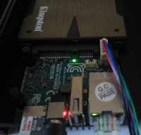

ODROID HC2 (odroid-hc2)
Jump to navigation
Jump to search
|
 ODROID HC2 | |
| Manufacturer | ODROID |
|---|---|
| Name | HC2 |
| Codename | odroid-hc2 |
| Released | 2018 |
| Category | community |
| Original software | Ubuntu |
| Original version | 20.04 LTS |
| Hardware | |
| Chipset | Samsung Exynos 5422 |
| CPU | 4x 1.9 GHz A15 & 4x 1.3 GHz A7 |
| GPU | Mali-T628 |
| Display | None |
| Storage | external HDD or microSD |
| Memory | 2GB LPDDR3 |
| Architecture | armv7 |
| Type | Single Board Computer |
{kind=link}
| USB Networking | |
|---|---|
| Flashing |
Unavailable
|
| Touchscreen |
Unavailable
|
| Display |
Unavailable
|
| WiFi |
Unavailable
|
| FDE | |
| Mainline |
Works
|
| Battery |
Unavailable
|
| 3D Acceleration |
Broken
|
| Audio |
Unavailable
|
| Bluetooth |
Unavailable
|
| Camera |
Unavailable
|
| GPS |
Unavailable
|
| Mobile data |
Unavailable
|
| SMS |
Unavailable
|
| Calls |
Unavailable
|
| USB OTG |
Unavailable
|
| NFC |
Unavailable
|
| Accelerometer |
Unavailable
|
|---|---|
| Magnetometer | |
| Ambient Light | |
| Proximity | |
| Hall Effect | |
| Barometer | |
| Power Sensor | |
| Camera Flash | |
|---|---|
| Keyboard |
Unavailable
|
| Touchpad |
Unavailable
|
| USB-A |
Works
|
| HDMI/DP |
Unavailable
|
| Ir TX |
Unavailable
|
| Ir RX | |
| Stylus | |
| Haptics | |
| Ethernet | |
| FOSS bootloader |
Works
|
| Primary Bootloader |
Works
|
|---|---|
| Secondary Bootloader |
Unavailable
|
| Mainline |
Works
|
| Internal Storage | |
| SD card |
Works
|
| USB Host | |
| USB Peripheral | |
| Display | |
| Keyboard | |
| Buttons |
Unavailable
|
Contributors
Maintainer(s)
Users owning this device
- DylanVanAssche (Notes: 2 pieces)
- Knuxfanwin8 (Notes: Odroid HC1, practically identical)
Installation
1. Use pmbootstrap to create a bootable SD card:
pmbootstrap init # pick 'odroid' as manufacturer, 'hc2' as device and 'none' as UI. pmbootstrap install --sdcard=/dev/sdX
- Only the UI 'console' is supported by the ODROID HC2 as there's no HDMI or any other video port available on this device. With UI 'none' you won't have SSH access over Ethernet.
- You must install the nonfree firmware package for this device to get it booting. It contains the binary blobs necessary for the U-boot bootloader to boot and the Realtek firmware to get Ethernet running to access the device over SSH.
2. Insert SD card into the Odroid HC2, plug in the Ethernet cable and turn it on.
3. The Odroid HC2 should boot up and become accessible over SSH.
v22.12 or later
postmarketOS v22.12 or later runs linux-edge from Alpine, we don't have any kernel fork anymore in pmaports.
RootFS on external HDD
| WARNING: This process is irreversible without reflashing postmarketOS on the microSD card, you have been warned. |
After installing postmarketOS on your ODROID HC2, you may want to move the rootFS to the external HDD of the ODROID HC2.
A set of tools to accomplish this are provided in the device-odroid-hc2-tools package which can be used as followed with root permissions:
apk add device-odroid-hc2-tools # install tools install-rootfs-hdd # run script and answer 'y' and with the device node you want to have the rootFS on (/dev/sdX) reboot
See also
- pmaports!2249 Initial merge request
- pmbootstrap!2069 Boot binary flashing support